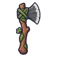
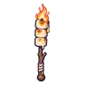

มันฝรั่งเดินได้
มอนธาตุดิน Lv 10–17
เจอที่
| แมพ | โซน | Lv | ภูมิภาค |
|---|---|---|---|
| ไร่ร้างหลังเขา | โรงนาพัง | 10–17 | ป่ากองไฟ |
| คอกสัตว์ร้าง | คอกแกะดำ | 10–17 | ป่ากองไฟ |
| ลานนวดข้าวร้าง | ลานหินโม่ยักษ์ | 10–17 | ป่ากองไฟ |
| หอรากมืด (Dark Root) | ประตูราก | 5–14 |
ค่าสถานะตามเลเวล
| Lv | HP | ATK | DEF | MDEF | EXP | Job |
|---|---|---|---|---|---|---|
| 10 | 830 | 19–29 | 2 | 3 | 14 | 11 |
| 13 | 1,160 | 24–35 | 3 | 4 | 17 | 13 |
| 17 | 1,494 | 30–44 | 4 | 6 | 21 | 16 |
ตีด้วยธาตุไหนดี
แรงขึ้น: ไฟ ×1.5 พิษ ×1.25
เบาลง: ลม ×0.5 ดิน ×0.25
วัตถุดิบที่ดรอป
| ของ | โอกาส | |
|---|---|---|
| มันฝรั่งแตกหน่อ | 55% | 1 ชิ้น (15% ได้ 2) |
อุปกรณ์ที่ดรอป (4)
| ของ | โอกาส |
|---|---|
 ขวานหินเหล็กไฟ | 0.25% |
| 0.25% | |
| 0.15% | |
 คบเพลิงมาร์ชเมลโล่ | 0.12% |
สกิล
ทุบพื้น (Lv 25+) · ทุบพื้น (Lv 60+) · ยิงไกล (Lv 60+)